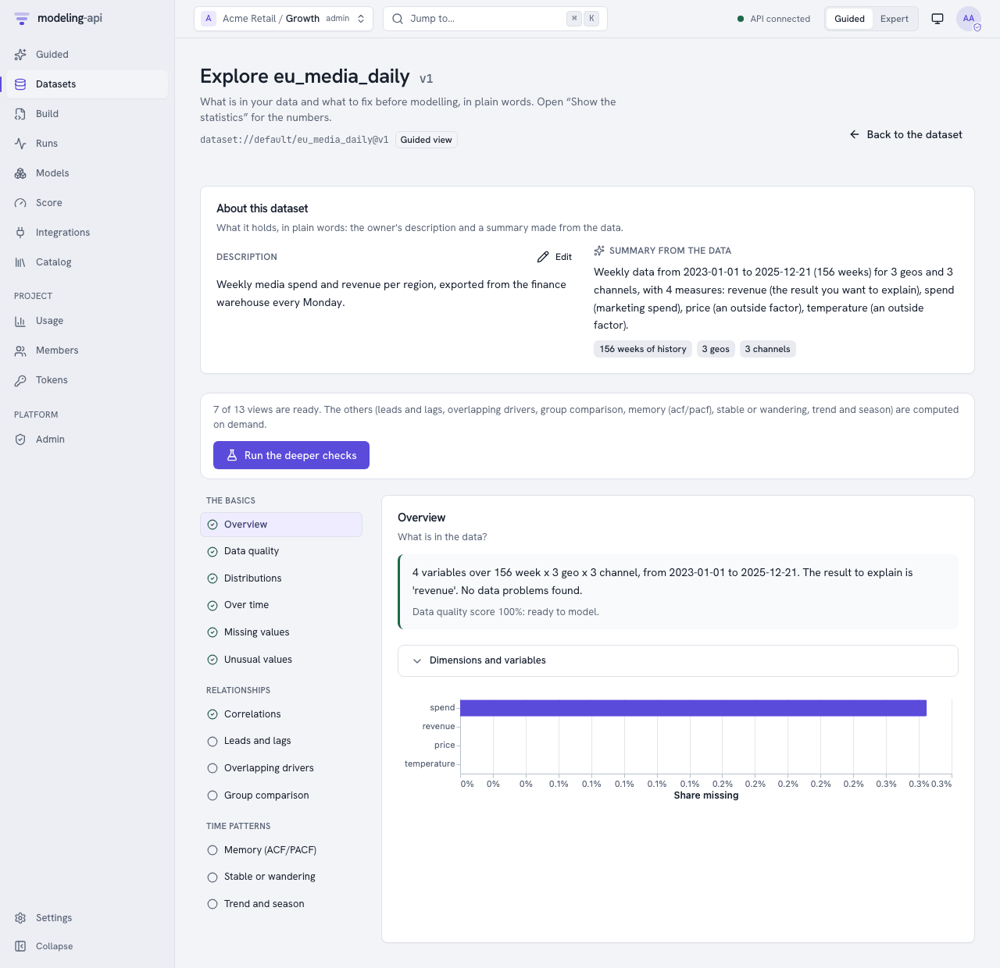
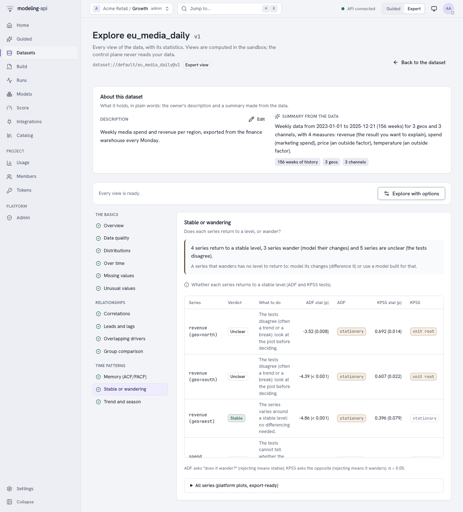
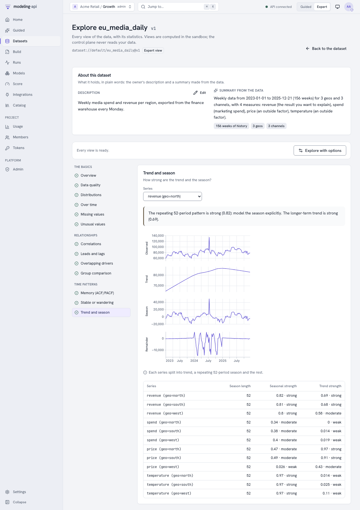

Explore a dataset v0.5¶
The Data Explorer answers the questions to ask before fitting anything: what is in the data, how it moves over time, where values are missing or unusual, which drivers move with the result and with how much delay, whether series wander or return to a level, how strong the season is, which drivers overlap, and what to fix first. Every view is computed in the sandbox (the control plane never reads your data) and comes with Vega-Lite plots and plain-language captions. The web app shows every view; the rest of this guide uses the HTTP API, which the web app calls.
In the web app¶
Open a dataset, then Explore this version (or go to
/datasets/<dataset>/versions/<n>/explore). The page starts with the dataset's
About and lists the thirteen sections in three groups: The basics
(overview, data quality, distributions, over time, missing values, unusual values),
Relationships (correlations, leads and lags, overlapping drivers, group comparison) and
Time patterns (memory - ACF/PACF, stable or wandering, trend and season). A tick marks a
section that is ready, an empty circle one that is computed on demand, a dash one that does
not apply to this data (with the reason).

- Guided mode shows each section's plain reading first ("4 series return to a stable level, 3 series wander (model their changes)…") and keeps the numbers one click away under Show the statistics. Run the deeper checks computes everything the ingest did not, with sensible defaults (the dataset's target as the KPI).
- Expert mode shows every statistic: test statistics and p-values, quantiles, VIFs and
the condition number, the significant lags, and All series: the platform's export-ready
plots (
ui/explore/plots/<section>.json). Explore with options sets the run's request (sections, KPI, the dimensions to split series by, lags, season length, α, correlation and outlier methods, prewhitening). - Pickers choose the variable or series a plot shows (one line per market, a series' STL decomposition, a driver's cross-correlation with the KPI); the plots render in the isolated plot sandbox like every plot.
- A Compute it now button on a section that is not computed yet starts an explore run
for it and the other missing sections. The run's id goes in the address (
?run=), so the page can be shared or reloaded; asking again with the same options answers at once from the cached run.


From Python and the command line¶
ds = api.datasets.find("weekly_sales")
assert ds is not None and ds.latest_version is not None
api.datasets.describe(ds.id, "Weekly sales and price by region, from the finance warehouse")
print(api.datasets.about(ds.id).summary_generated) # "Weekly data from ... for 5 regions ..."
explored = api.datasets.explore( # computed in the sandbox; the same request is cached
ds.id,
ds.latest_version,
sections=["overview", "stationarity", "ccf", "stl", "quality"],
kpi="sales",
max_lag=12,
)
for section in explored.index.sections if explored.index else []:
print(section.section, section.status, section.message_plain or "")
stationarity = api.explorations.view(explored, "stationarity") # the view, as JSON
mapi explore dataset dataset://growth/weekly_sales@latest \
-s overview -s stationarity -s ccf -s stl --kpi sales --out views/
mapi explore dataset weekly_sales --show quality # one view as JSON
Views written at ingest¶
Every ingest writes the quick sections next to the dataset: overview, distributions,
timeseries, missingness, outliers, correlation and quality. Fetch the index, then
any view, through the artifact route:
api "$API/v1/datasets/$DATASET_ID/versions/1/artifacts/ui/explore/index.json"
api "$API/v1/datasets/$DATASET_ID/versions/1/artifacts/ui/explore/quality.json"
Each answer is a signed link (ArtifactLink) to the JSON view. The index lists every section
with its status: ok, skipped (with the reason in plain words, for example "the data has
no time dimension") or error. Plots for a section are at
ui/explore/plots/<section>.json (a list of PlotSpecs to render in the plot sandbox).
Everything else, on demand¶
The heavier sections - stl, stationarity, ccf, acf_pacf, vif, groups - and any
section with other options run as an explore run:
api -X POST "$API/v1/datasets/$DATASET_ID/versions/1/explore" -d '{
"sections": ["stationarity", "stl", "ccf", "vif"],
"kpi": "revenue",
"facet_by": ["geo"],
"max_lag": 12,
"prewhiten": true
}'
The answer (202) is an Exploration with the run. Poll GET /v1/explorations/{run_id}:
once done it holds the index and a signed link for every view. Asking again with the same
request answers 200 from the last run, so explorers are instant once computed.
| Option | Default | Meaning |
|---|---|---|
sections |
all 13 | Which sections to compute |
vars |
every numeric variable | Variables to include |
kpi |
the target variable | The result cross-correlations are computed against |
time_dim |
the schema's time dim | The dimension "over time" means |
facet_by |
none (every series) | Up to two dims to split series by (other dims are summed for spend, media and the target, averaged otherwise) |
group_by |
the first categorical dim | The dim compared in groups |
max_lag |
26 | Lags for ACF/PACF and cross-correlations |
period |
from the frequency (52 weekly, 12 monthly, 7 daily) | Season length for STL |
alpha |
0.05 | Significance level of the tests |
correlation |
pearson |
Or spearman |
outliers, outlier_threshold |
mad, 3.5 |
Robust score (mad, iqr or zscore, all on a standard-normal scale) and its threshold |
prewhiten |
true | Filter both series with the driver's own AR model before cross-correlating (turn it off to see the raw correlations) |
max_series |
50 | Series per view (the rest are counted as omitted) |
The sections¶
| Section | What you see | Read it like this |
|---|---|---|
overview |
Dims, variables, roles, missing share, a summary and a quality score | "104 weeks for 3 markets; 2 data problems to look at." |
distributions |
Histogram, mean, spread, skew, quantiles and share of zeros per variable | Heavy tails or many zeros may need a transform or another likelihood. |
timeseries |
Every variable over time, faceted | Breaks, level shifts and gaps are easier to see than to test. |
missingness |
A heatmap of the missing share by variable and period, the longest gap | Long gaps cannot be imputed reliably. |
outliers |
Values far from the typical value, with their coordinates | Errors or real events? Real events deserve a control variable. |
correlation |
The correlation matrix with p-values | Drivers that move almost together are hard to separate. |
ccf |
Correlation of each driver with the KPI at each lag (positive lag: the driver leads) | A peak at lag 2 means the effect shows up two periods later. Prewhitened by default; the significance band follows Bartlett's formula for two autocorrelated series, so two smooth but unrelated series are not flagged at half of their lags. |
acf_pacf |
Autocorrelation and partial autocorrelation with the significance band, and suggested AR/MA orders | Bars beyond the dashed band are more than chance. |
stationarity |
ADF and KPSS per series with one verdict | stable, difference (it wanders: model changes), trend_stable or unclear (the tests disagree: look at the plot). |
stl |
Trend, season and remainder with their strengths (0 to 1) | Seasonal strength above about 0.6: model the season explicitly. |
vif |
Variance inflation per driver and the condition number | Above 10: the driver's separate effect is poorly identified. |
groups |
Each variable across markets or stores, with an ANOVA or Kruskal-Wallis test | Very different groups may need a hierarchical model. |
quality |
Plain-language warnings, most serious first, each with a suggested action | Fix errors before modelling; warnings deserve a look. |
The quality warnings are also what the data.quality governance check counts (see
Validate models with governance policies).
Dataset About¶
GET /v1/datasets/{dataset_id}/about describes the latest version in plain words from its
schema and coordinates ("Weekly data from 2023-01-01 to 2024-12-29 (104 weeks) for 10 markets
…") next to the owner's own description, which PATCH changes:
api -X PATCH "$API/v1/datasets/$DATASET_ID/about" \
-d '{"description_user": "Weekly media spend and revenue from the finance warehouse."}'
In the web app the dataset page and the Data Explorer show both side by side (About this dataset); editors change the description in place with Edit.
Notes¶
- Views are capped: at most 200 series per view, 5,000 points per series (longer series are
thinned evenly and flagged
downsampled), 256 variables, 200 lags. - Statistical tests come from statsmodels and scipy and are validated against their reference outputs in the test suite.
- Strings in views come from your data: render them as text only.